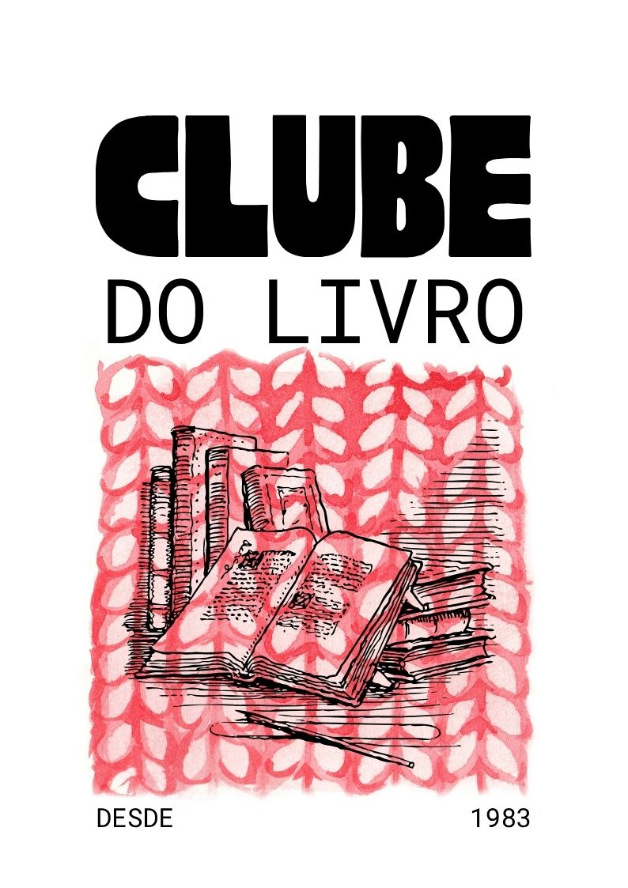

Encontro de novembro: Dom Casmurro

Neste mês, vamos conversar sobre Dom Casmurro, de Machado de Assis. Traga o seu exemplar e as suas dúvidas sobre Capitu.
Como participar
- Data: 14 de novembro, às 19h
- Local: Biblioteca Municipal, sala 2
- Entrada gratuita, sem inscrição